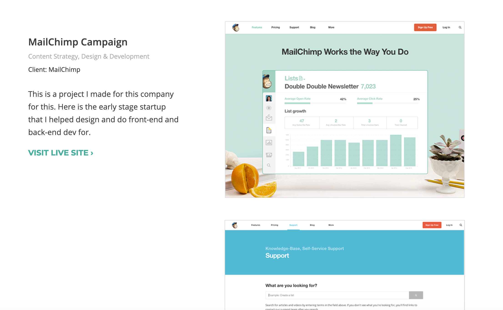
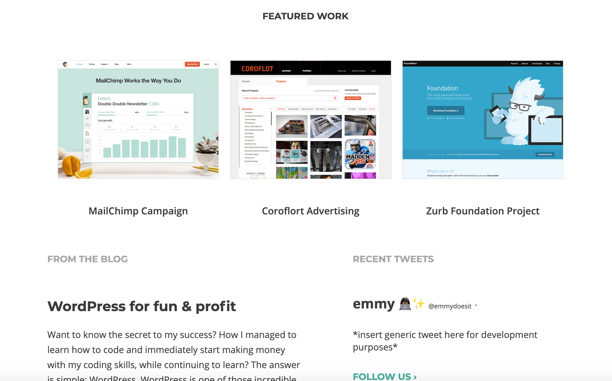
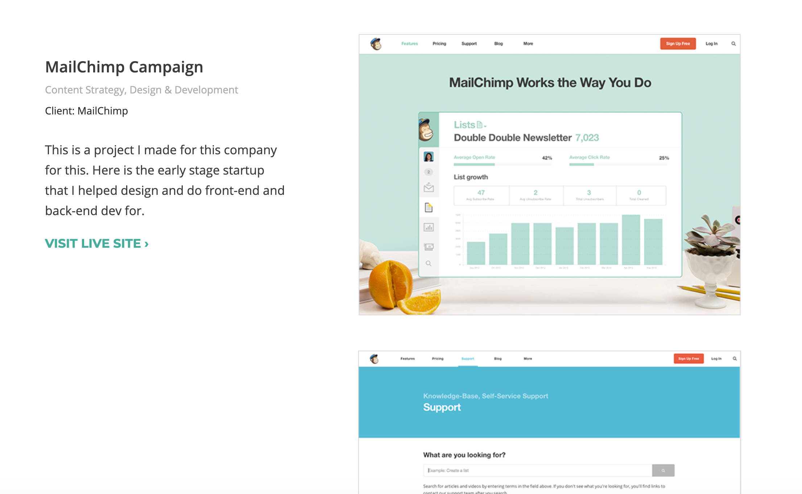
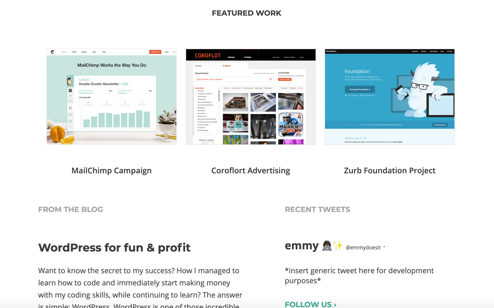
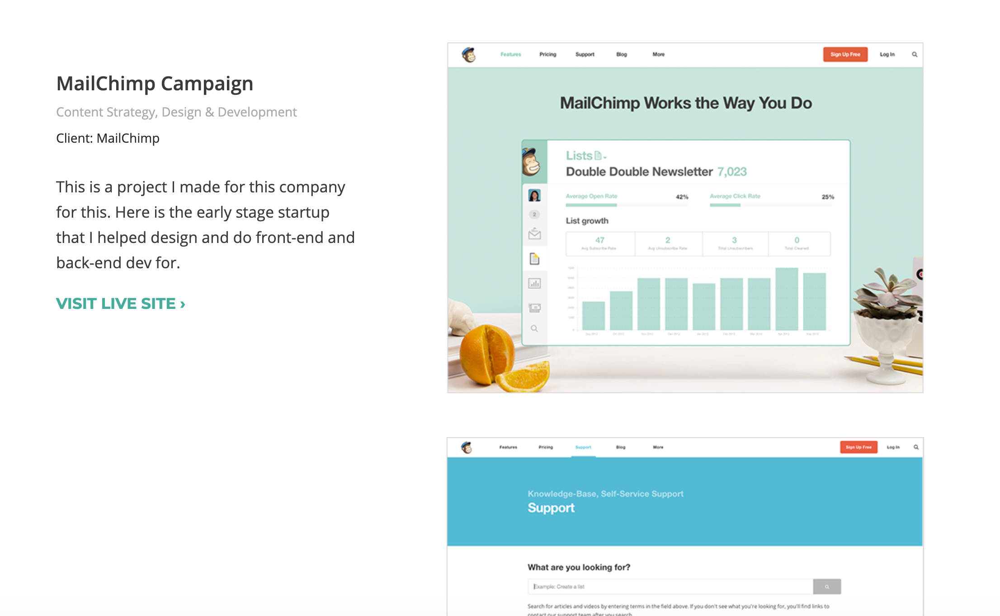
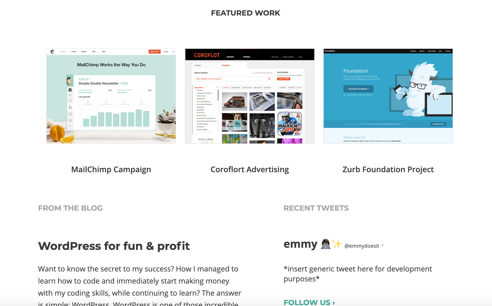

Case Study


Accelerate Marketing
WordPress, HTML5, CSS3, PHP
For this project, I was assigned the task of coding a WordPress theme based on web designs that were provided to me for Accelerate Marketing. This was a self initiated project courtesy of Skillcrush, where they provided source material that closely mirrored the experience of working directly with a client. This included daily emails and a professional web development workflow that consisted of week long sprints before deploying changes. Because this was an existing company that previously used Blogger as their platform, maintaining the data from their original website was key. After importing their original data, I began working on their custom theme. When making their theme, I made a parent theme that had the basic structure of their layout. I then utilized a child theme to add special features such as custom post types, which allow the client to create additional posts as needed while maintaining the look and feel of the original design.
The ability to maintain the website on the client’s end was so important, so I utilized a lot of plugins to make that happen. For example, I used a plugin called “Custom Fields” that allows me to code their layout on the back end, while all they have to do on the front end is write information into their post like they normally would. While plugins can be super useful, I did hit a few snags. When using a plugin that embeds social media data, I found that there were issues with being able to customize it from both the front end and the back end, due to the lack of recent updates of the plugin itself. To combat that, I made sure to find one that was not only up to date, but allowed the customer to amend information as needed with no issues. All in all, the original objective was met 100%.